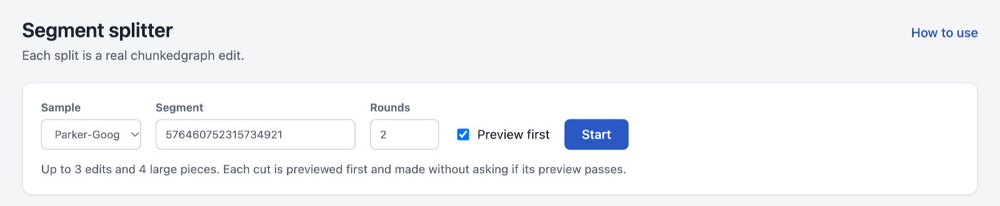

How to use the segment splitter
The segment splitter cuts large, wrongly merged segments into smaller pieces, so they are easier to proofread by hand.
1. Open the app
The app runs on the lab's GPU server. Whoever starts it gets a link that looks like this:
http://127.0.0.1:8765/?token=y8F6Vic…To open it from your own computer, first connect to the server with a tunnel, then open the link in your browser:
ssh -L 8765:localhost:8765 <server>- The token in the link is a password. Anyone with the link can make edits with the server's CAVE account, so don't share it or paste it in chat.
- The link changes every time the app restarts. If the page says "Missing or wrong token", ask for the new link.
- Click How to use at the top right of the app at any time to open this guide.
2. Split a segment

- Sample: choose the dataset the segment belongs to.
- Segment: paste one segment (root) ID, for example from Neuroglancer. Only digits are accepted.
- Rounds: leave it at
1to cut the segment into two pieces. See rounds to cut further. - Preview first: leave it ticked. The app then checks the cut with a read-only preview and only makes the edit if the preview passes. You won't be asked to confirm.
- Click Start. The job appears under Progress.
3. Cut into more pieces with rounds
Each cut gives two large pieces. With more than one round, the app keeps going and cuts each of those pieces again:
| Rounds | What happens | Edits at most | Large pieces |
|---|---|---|---|
| 1 | A → B + C | 1 | 2 |
| 2 | then B → B0 + B1 and C → C0 + C1 | 3 | 4 |
| 3 | then each of those again | 7 | 8 |
The hint under the form shows these numbers before you start. The maximum is 6 rounds. Every cut in the tree gets its own preview, and a branch stops on its own if its preview fails or a piece is too small (under 10 L2 nodes). The other branches carry on.
4. Follow the progress

The newest jobs are at the top, and pieces from later rounds are nested under the segment they came from. The page updates itself every few seconds.
| Status | Meaning | Was anything edited? |
|---|---|---|
| Queued Previewing | Waiting, or checking the cut. Up to 4 jobs run at once. | No |
| Splitting | The edit is being made. It takes from about 15 s for small segments to about 3 min for very large ones. | In progress |
| Split | Done. The result lists the operation number (Op) and the new segment IDs, largest first, with their sizes in L2 nodes. | Yes |
| Preview failed | The preview found that the cut wouldn't be good enough, so it wasn't made. The result shows what the cut would have given. | No |
| Failed | Something went wrong before the edit. The result says what. | No |
| Split, sides not separated | The edit was made, but the two sides are still connected. | Yes |
| Outcome unknown | The request failed, but the edit may still have been applied. See below. | Maybe |
Every result has a Copy button. It copies the sample, segment, status and full message, including the complete server error if there was one. Use it when you report a problem.
5. When something goes wrong
Preview failed
Nothing was edited. A preview passes only if the cut is valid, cleanly separates the two sides, misses at most 1% of supervoxels, and the smaller piece has at least 10% of the segment. In the example above, "Would give 1103 / 41 L2" failed because 41 is under 10% of the total: the cut would only have shaved off a small piece. Such segments may need splitting by hand.
Failed
Nothing was edited. The message explains why: for example, the segment is too small (under 10 L2 nodes), or it is no longer the latest version because someone else edited it. In that case, paste in the newest ID. If it mentions an invalid or expired CAVE token, ask whoever runs the app to renew it. If the message is a server error you don't understand, press Copy and send it to whoever maintains the app.
Outcome unknown
The edit may or may not have been applied, for example because the server took too long to answer. The segment is blocked so it can't be edited twice. Wait a few minutes, then click Re-check:
- If the edit went through, the status becomes Split and lists the new IDs.
- If the segment hasn't changed, the status becomes Failed, and you can start it again.
6. Good to know
- Segment IDs change with every edit. After a split, the old ID is out of date. Use the new IDs from the result.
- Small fragments: a cut can leave a few tiny fragments besides the two large pieces. They aren't cut further.
- Continuing a stopped branch: Re-check doesn't resume it. Paste the piece's ID in as a new job.
- Undoing a split: edits can be undone by whoever maintains the app, using the operation number (Op) shown in the result. Undo newest first.
- Stopping: there is no stop button. Stopping the app on the server stops new work. An edit already in progress still finishes on the CAVE server.